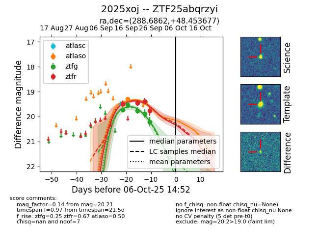
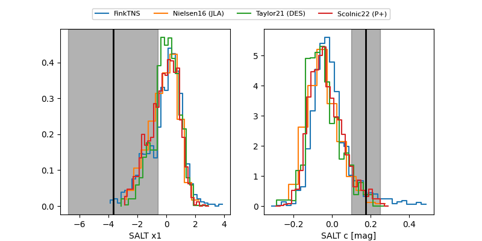

FINK: ZTF25abqrzyi
Lasair: ZTF25abqrzyi
ALeRCE: ZTF25abqrzyi
TNS: 2025xoj
YSE: 2025xoj
ZTF25abqrzyi (ztf,fink)
2025xoj (tns,yse)
equatorial (ra, dec) = (288.6862,+48.45368)
galactic (l, b) = (79.4937,+16.34039)


last atlaso=19.43, ztfg=20.21, ztfr=19.77
3 atlaso, 5 ztfg, 4 ztfr detections